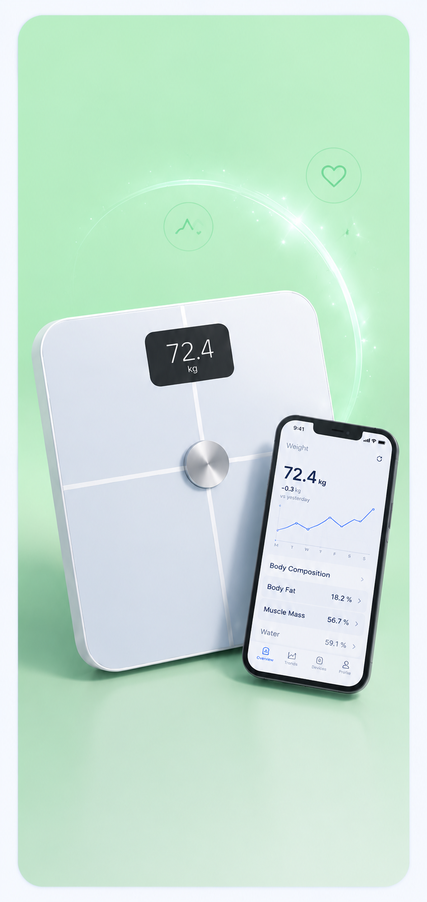

What is intermittent fasting?
Intermittent fasting (IF) is not a diet in the traditional sense. It does not tell you what to eat — it tells you when to eat. By cycling between periods of eating and fasting, you create a window where your body shifts from burning glucose to burning stored fat, while also triggering a range of hormonal and cellular changes that go far beyond simple calorie reduction.
Unlike most dietary approaches, IF has been practised in some form for thousands of years — through religious fasting, cultural tradition, and evolutionary necessity. The modern scientific interest, however, has brought something new: a rigorous body of research showing that the timing of eating has profound effects on metabolism, inflammation, longevity markers, and brain health.
IF is not about eating less. It is about eating during a defined window. Many people eat the same number of calories and still see significant improvements in body composition, blood sugar, and energy — simply by compressing their eating window.
The main fasting protocols
There is no single version of intermittent fasting. The right approach depends on your lifestyle, schedule, and goals. Here are the four most widely practised methods — their structure, who they suit, and how demanding they are in practice.
Fast for 16 hours, eat within an 8-hour window — typically noon to 8pm. Most people achieve this simply by skipping breakfast. The most sustainable long-term approach for the majority of people.
Eat normally five days per week. On two non-consecutive days, restrict intake to around 500–600 calories. Works well for people who find daily fasting windows impractical.
All daily calories consumed in a single meal, typically within a 1-hour window. Very effective for fat loss but difficult to sustain socially and nutritionally. Not recommended for beginners.
One or two full 24-hour fasts per week. Powerful for metabolic reset and autophagy, but demanding. Best approached after several weeks of 16:8 experience.
If you are new to fasting, start with 16:8 and nothing else. The internet is full of people doing OMAD or 72-hour fasts on week one — and quitting by week two. Consistency over intensity, every time. The 16:8 protocol is where most of the research is concentrated, and it is the easiest to make permanent.
What happens in your body when you fast?
The effects of fasting unfold in distinct phases. Understanding what is happening biologically makes the process far less intimidating — and helps you interpret what you are feeling.
Hours 0–4: Your body digests your last meal. Blood glucose and insulin are elevated. No fat burning is occurring.
Hours 4–8: Glucose begins to drop. Insulin falls. Your body starts drawing on liver glycogen (stored glucose) for energy.
Hours 8–12: Glycogen stores are partially depleted. Growth hormone begins to rise. Fat burning increases. Most people are asleep during this window.
Hours 12–16: This is where the metabolic shift becomes significant. Fat oxidation is elevated. Insulin is at its lowest. Autophagy — the cellular repair process — begins to activate meaningfully.
Hours 16–24: Full fat-burning mode. Autophagy is in full swing. Ketones may begin appearing in the bloodstream. Growth hormone peaks.
Autophagy literally means "self-eating." It is the process by which your cells break down and recycle damaged components. It is one of the most significant mechanisms linking fasting to longevity — and it was the subject of the 2016 Nobel Prize in Physiology or Medicine.
Insulin is the key hormone to understand. Every time you eat — especially carbohydrates — insulin spikes. While insulin is elevated, fat burning is effectively switched off. By compressing your eating window, you naturally spend more time in a low-insulin state, which is when fat loss and cellular repair occur.
Who is it for?
Intermittent fasting is one of the more flexible health tools available — but it is not universally appropriate. Here is an honest assessment of who tends to benefit and who should proceed with caution.
- People who are not hungry in the morning and skip breakfast naturally
- Those looking to reduce overall calorie intake without counting calories
- People with insulin resistance or pre-diabetes (under medical guidance)
- Anyone who finds structured eating windows easier than restriction
- People interested in longevity and cellular health beyond weight loss
- Those who have hit a plateau with traditional calorie-based approaches
- People with a history of disordered eating — fasting can reinforce restriction patterns
- Pregnant or breastfeeding women — caloric needs are elevated
- People with type 1 diabetes — medication timing and hypoglycaemia risk
- Children and teenagers — still in active growth phases
- Those on certain medications that must be taken with food
- Elite athletes with high daily training loads and recovery demands
Pros & cons
- Effective for fat loss without counting calories
- Improves insulin sensitivity and blood sugar regulation
- Triggers autophagy — a cellular repair mechanism linked to longevity
- Reduces inflammation markers in multiple studies
- Simplifies daily routine — fewer meals to plan and prepare
- May improve focus and mental clarity during fasted state
- Can reduce LDL cholesterol and triglycerides
- Hunger and irritability in the first 1–2 weeks of adaptation
- Social friction — breakfast meetings, family meals, events
- Risk of overeating during the eating window if not mindful
- May reduce muscle protein synthesis if protein intake is not adequate
- Can worsen anxiety in some individuals due to cortisol spikes
- Not a shortcut — food quality still matters significantly
The biggest mistake people make with IF is treating the eating window as a free pass. You cannot fast for 16 hours and then eat ultra-processed food for 8 hours and expect results. IF works best when combined with whole foods and adequate protein. It is a tool that amplifies good habits — not a substitute for them.
What does the science say?
Intermittent fasting has become one of the most studied nutritional interventions of the past decade. The evidence is compelling in several areas — with some important nuances that mainstream coverage tends to miss.
A 2020 review in the New England Journal of Medicine concluded that intermittent fasting produces weight loss comparable to continuous calorie restriction — but with additional metabolic benefits, including improved insulin sensitivity and reduced inflammatory markers, that appear independent of weight loss itself.
Research published in Cell Metabolism found that meaningful autophagy induction begins around the 12–14 hour mark of fasting, with significant upregulation by 16–18 hours. This is a key reason the 16:8 protocol is favoured — it reliably crosses the autophagy threshold during sleep, with no subjective fasting experience required.
A 2019 randomised controlled trial in Obesity found that 16:8 time-restricted eating significantly reduced insulin levels, blood pressure, and oxidative stress in metabolic syndrome patients — independent of caloric intake. Participants were not asked to change what they ate, only when.
The research on IF is stronger than most people realise — and goes well beyond simple weight loss. The metabolic, inflammatory, and cellular benefits appear to be real and significant. That said, long-term adherence remains the primary predictor of outcome. A protocol you can stick to for years beats a more aggressive one you abandon in weeks.
What most people get wrong
After years of IF becoming mainstream, the same mistakes appear repeatedly. These are the ones that derail results most often.
Mistake 1: Breaking the fast with a large, high-carb meal. After 16 hours of low insulin, flooding your system with refined carbohydrates causes a dramatic spike. Start your eating window with protein and fat — save carbohydrates for later in the window when insulin sensitivity is lower.
Mistake 2: Not drinking enough during the fast. Water, black coffee, and plain tea are all allowed and encouraged. Dehydration is one of the main causes of the headaches and fatigue people attribute to fasting. Aim for 2–3 litres of water across the fasting window.
Mistake 3: Expecting results in one week. The first 10–14 days are an adaptation period. Hunger peaks around day 3–5 and then decreases significantly. Most people who quit do so before the adaptation is complete. Give it three weeks before judging.
Mistake 4: Ignoring protein. During a compressed eating window, many people under-eat protein — which leads to muscle loss alongside fat loss. Aim for at least 1.6g of protein per kg of bodyweight within your eating window, regardless of protocol.
Most IF failures are not failures of the protocol — they are failures of expectation management. People expect dramatic results in two weeks and quit when results are modest. IF is a long game. The metabolic benefits compound over months, not days. Anyone telling you otherwise is selling something.
The short version
- Intermittent fasting is about when you eat, not what you eat — though food quality still matters significantly.
- The 16:8 protocol is the most evidence-backed and sustainable starting point for most people.
- Autophagy — the body's cellular repair mechanism — activates meaningfully around the 12–16 hour mark, making fasting relevant well beyond weight loss.
- The first two weeks are the hardest. Hunger, fatigue, and irritability are normal and temporary.
- Protein intake during the eating window is non-negotiable if you want to preserve muscle mass.
- IF is not suitable for everyone. If in doubt, speak to a doctor before starting.
How Improo can help
Use the Improo fasting tracker (available Mid-Summer) to log your eating windows and track your fasting streaks. Consistency is everything with IF — and seeing your streak grow is one of the most effective motivators to maintain the habit long-term. You can also set a daily reminder to open your eating window, which removes one more decision from your day.
What we'd actually use
These are products that genuinely complement an intermittent fasting practice. We do not recommend tracking apps here — we have our own. These are physical tools that make fasting more comfortable and effective.

The single most effective tool for surviving the first two weeks of intermittent fasting. Most people quit fasting because of headaches and fatigue — which are caused by electrolyte depletion, not hunger itself.
- ✓ Replaces sodium, potassium and magnesium lost during fasting
- ✓ Zero sugar and zero calories — won't break your fast
- ✓ Medical-grade formula, dissolves instantly in water
- ✓ Makes the first two weeks significantly easier to sustain

Tracking progress is one of the strongest predictors of long-term adherence with intermittent fasting. The Withings Body Comp goes far beyond weight — measuring body fat, muscle mass, visceral fat, nerve health, and vascular age.
- ✓ Measures body fat, muscle mass and visceral fat — not just weight
- ✓ Daily weight fluctuations with IF make normal scales misleading
- ✓ Syncs automatically to app — shows weekly and monthly trends
References
-
1de Cabo, R. & Mattson, M.P. (2019). Effects of Intermittent Fasting on Health, Aging, and Disease. New England Journal of Medicine, 381(26), 2541–2551. PubMed: 31881139
-
2Alirezaei, M. et al. (2010). Short-term fasting induces profound neuronal autophagy. Autophagy, 6(6), 702–710. PubMed: 20534972
-
3Sutton, E.F. et al. (2018). Early Time-Restricted Feeding Improves Insulin Sensitivity, Blood Pressure, and Oxidative Stress. Cell Metabolism, 27(6), 1212–1221. PubMed: 29754952
-
4Longo, V.D. & Panda, S. (2016). Fasting, Circadian Rhythms, and Time-Restricted Feeding in Healthy Lifespan. Cell Metabolism, 23(6), 1048–1059. PubMed: 27304506